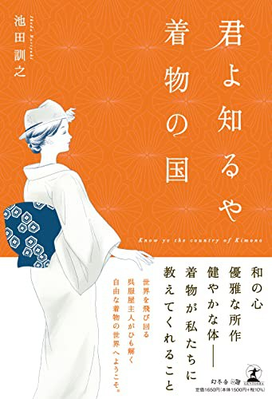

和の心を、
次の世代へ。
呉服屋 池田訓之

和の心を、
次の世代へ。
呉服屋 池田訓之
心は直接みがけない。だから身近なものをみがく。掃除道の話と、5つの効用。
2026.10.25トイレの神様、江戸の下肥。日本人のきれい好きの根っこにあるもの。
近日公開変わりたい自分にいちばん反対するのは、自分自身。
近日公開三日坊主で終わる理由と、続けるための「1か月を3つに分ける」考え方。自身が25kgやせた体験から。
万物に神様が宿ると感じる心。掃除で心をみがいてきた日本人の知恵を、神話から掃除道までたどる。
お菓子のいただき方、懐紙の扱い。作法の一つひとつに込められた相手への心づかいを、体験しながら。
直線で裁ち、ほどけば一反に戻る着物。自然と共に生き、ものを大切にしてきた日本人の感じ方。

和の心、優雅な所作、健やかな体――着物が私たちに教えてくれること。世界を飛び回る呉服屋主人がひも解く、自由な着物の世界への案内書。
着物のこと、暮らしのしきたり、生き方の悩み。ラジオやYouTubeに届いた質問に、一つずつ答えています。
講演をもとにした個人チャンネルは準備中です。
これまでの動画を見る